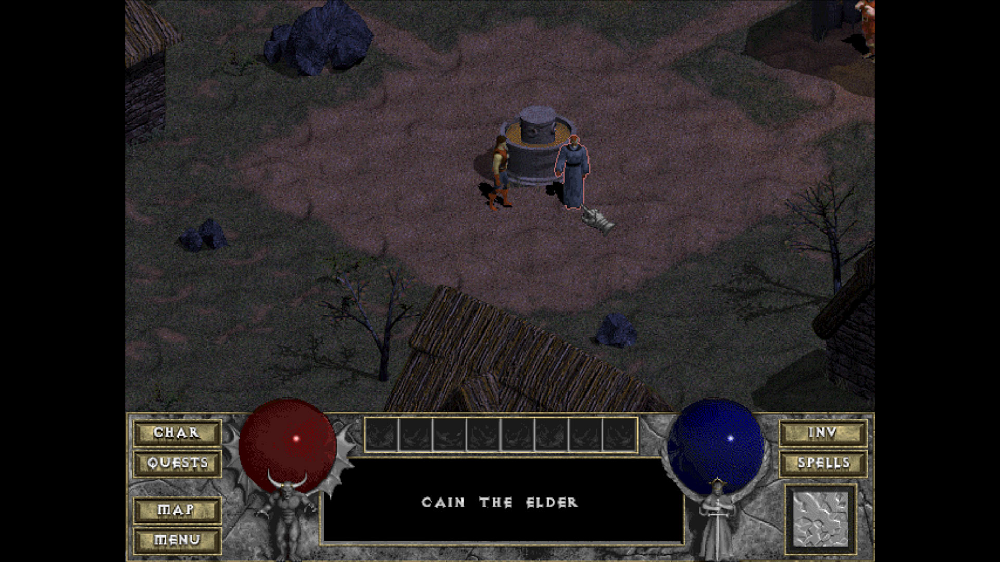

Les images peuvent être affichées à l'aide de la balise img ET picture
img est une balise qui va chercher la source (image) là où elle est stockée (selon le chemin indiqué
dans l'attribut src) et elle affiche cette source là où img est déclaré (écrite, placée
sur la page). ,
les images sont en display "inline", c'est-à-dire qu'elle suivra le flux du contenu qui la précéde
et qui la suivra.
img peut être déclarée dans et hors paragraphe
Pour bien référencer une image, il convient de lui ajouter une légende. Cette légende, associé à
l'image et ces deux éléments mis dans un conteneur approprié vont permettre de créer une "entité
sémantique", qui liera l'image, son texte alternatif, sa description du title et sa légende en un
ensemble pertinent pour le référencement.

Image tirée du jeu vidéo Diablo, hack 'n' slash, édité par Blizard sorti en 1997
James White a produit quelques protrait d'icônes de la pop culture, typique des années 80, ici
il s'agit de Doc Brown, de la série de film "retour vers le futur"
Intégrer les fichiers audio
Pour accéder et lire un fichier audio hébergé sur le site, il faut utiliser la balise
audio.
Cette balise peut soit avoir l'attirbut src pour aller chercher le fichier audio, soit utiliser une
balise source
Utiliser plusieurs sources, dans le cas de l'audio, permet de s'adapter à la configuration et la
bande-passante de l'utilisateur. Un appareil, pour lire des fichier audio ou vidéo, à besoin de
"codecs", des fichier qui permettent à un système de décrypter une source et dans notre cas de la
faire entendre.
Si un des fichiers est en erreur, l'appareil pourra sélectionner la source qu'il sait jouer et qui
n'est pas en erreur.
Fichier audio du jeu vidéo Diablo, quand le jouer est dans la ville de Tristram.
Intégrer de l'audio partagé
Exemple avec bandcamp
Exemple avec Soundcloud
Intégrer les fichiers vidéos
Intégrer de la vidéo partagée
Les vidéo partagées par d'autres sites le sont dans le même principe que pour l'audio partagé déjà
vu
Youtube propose un partage de vidéo basique, car l'iframe proposée est bloquée en hauteur et en
largeur définies, dans un format 16/9ème.
On récupèrera l'frame proposée par dailymotion, qui elle est encadrée par une div qui permet
l'adaptatif du format de la vidéo selon l'espace disponible autour de l'iframe
 ,
les images sont en display "inline", c'est-à-dire qu'elle suivra le flux du contenu qui la précéde
et qui la suivra.
,
les images sont en display "inline", c'est-à-dire qu'elle suivra le flux du contenu qui la précéde
et qui la suivra.